New to tracker — actual advert age unknown
Prodej domu/vily, 300 m²
Prodej domu/vily, 300 m²
Not stated → 3,900,000 CZK
Original advert ↗Daily market update · 2026-11-16 · Ostrava + 15 km
Data limitation: Prices are advertised, not completed transaction prices. Disappeared adverts are NOT proof of sold or rented status. Search radius may be unverified for individual locations. "New" means first observed since a comparable complete Sreality scan, not independently verified as newly published. "New to tracker" may reflect expanded or partial portal coverage. Older Sreality IDs and known cross-lists are excluded. Additional monthly rental charges are not reliably supplied in these search cards.
Prodej domu/vily, 300 m²
Not stated → 3,900,000 CZK
Original advert ↗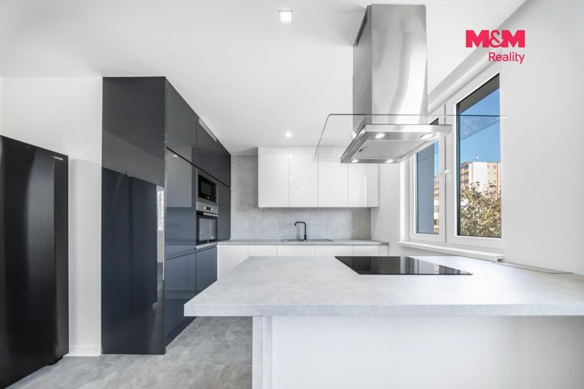
Prodej domu/vily, 239 m²
Not stated → 13,900,000 CZK
Original advert ↗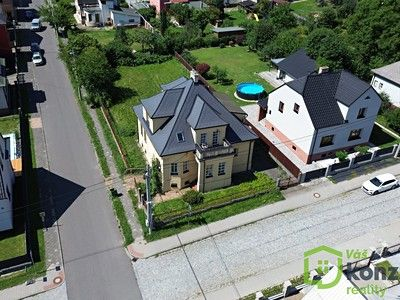
Svinov, Ostrava-město
10,990,000 CZK → Not stated
Original advert ↗
Dolní Lutyně, Karviná
4,250,000 CZK → 4,000,000 CZK -5.88%
Original advert ↗
Bludovice, Karviná
3,900,000 CZK → Not stated
Original advert ↗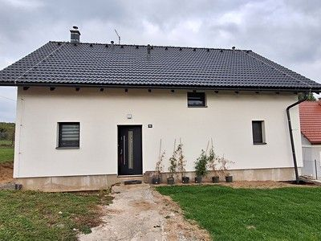
Chotěbuz, Karviná
Not stated → 9,800,000 CZK
Original advert ↗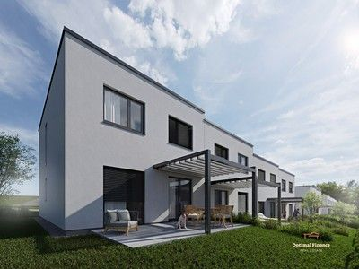
Ostrava, Ostrava-město
10,680,000 CZK → Not stated
Original advert ↗
Místek, Frýdek-Místek
12,350,000 CZK → 12,350,000 CZK
Original advert ↗
Lutyně, Karviná
5,200,000 CZK → 4,999,000 CZK -3.87%
Original advert ↗
Borová, Opava
6,800,000 CZK → Not stated
Original advert ↗
Nová Bělá, Ostrava-město
19,990,000 CZK → Not stated
Original advert ↗
Petřvald, Karviná
4,200,000 CZK → 4,200,000 CZK
Original advert ↗
Horní Těrlicko, Karviná
Not stated → 10,000,000 CZK
Original advert ↗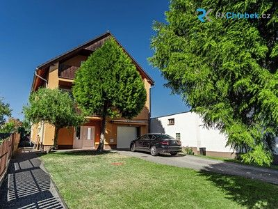
Kravaře, Opava
9,500,000 CZK → Not stated
Original advert ↗Výškovice, Ostrava-město
Not stated → 13,900,000 CZK
Original advert ↗
Svinov, Ostrava-město
8,990,000 CZK → 8,990,000 CZK
Original advert ↗
Petřvald, Karviná
4,800,000 CZK → 4,800,000 CZK
Original advert ↗
Frýdek, Frýdek-Místek
7,600,000 CZK → Not stated
Original advert ↗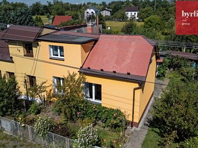
Paskov, Frýdek-Místek
5,665,000 CZK → 4,990,000 CZK -11.92%
Original advert ↗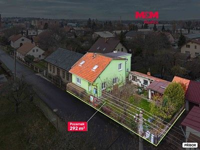
Příbor, Nový Jičín
Not stated → 6,990,000 CZK
Original advert ↗
Plesná, Ostrava-město
12,870,000 CZK → Not stated
Original advert ↗
Rychvald, Karviná
4,850,000 CZK → 4,850,000 CZK
Original advert ↗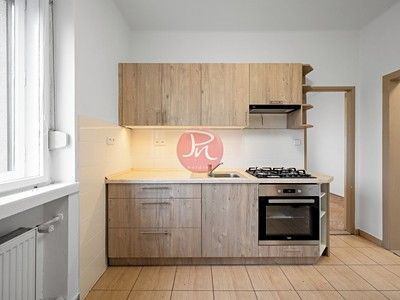
Poruba, Ostrava-město
Not stated → 11,990,000 CZK
Original advert ↗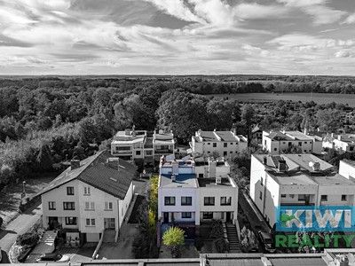
Výškovice, Ostrava-město
Not stated → 7,950,000 CZK
Original advert ↗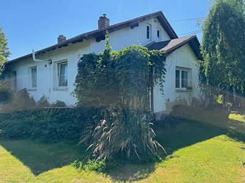
Michálkovice, Ostrava-město
4,500,000 CZK → Not stated
Original advert ↗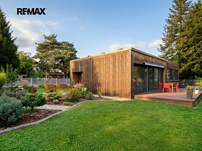
Vřesina, Opava
9,990,000 CZK → Not stated
Original advert ↗
Petrovice u Karviné, Karviná
4,900,000 CZK → 4,900,000 CZK
Original advert ↗
Ostrava, Ostrava-město
10,680,000 CZK → Not stated
Original advert ↗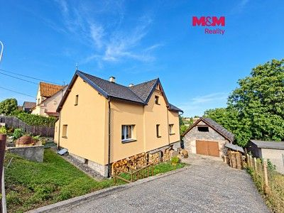
Poruba, Karviná
6,900,000 CZK → Not stated
Original advert ↗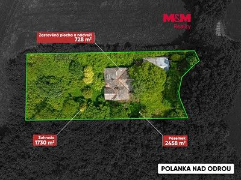
Polanka nad Odrou, Ostrava-město
Not stated → 3,900,000 CZK
Original advert ↗